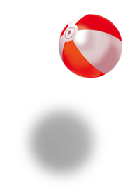
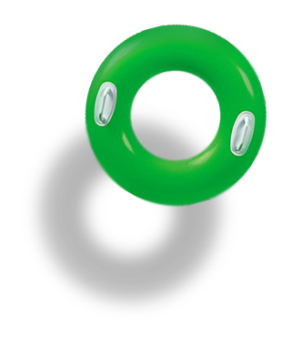

В St.Tropez созданы все условия для отдыха с маленькими детьми
Отдельный подогреваемый бассейн с горкой и большая детская площадка смогут надолго увлечь вашего ребенка. в выходные дни у нас работают профессиональные аниматоры, которые в течение всего дня смогут позаботиться о ваших малышах.
Информация для родителей
- Дети младше 5 лет - вход бесплатный.
- Детский бассейн обогревается, что позволяет постоянно поддерживать комфортную температуру в бассейне.
- На детской площадке есть игровая зона, где малыши смогут покататься на качелях, попрыгать на батуте и проявить свои творческие способности.
